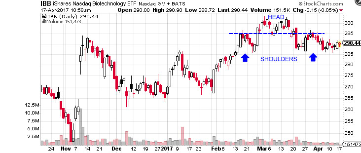
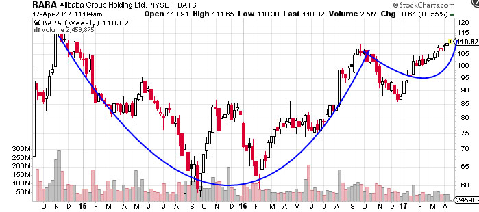
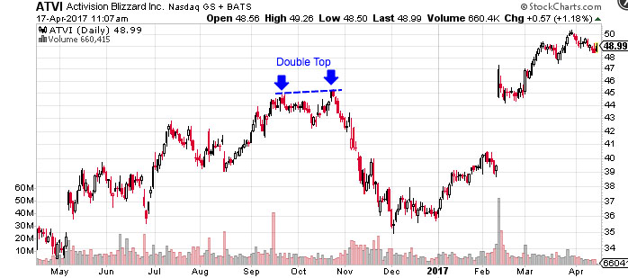
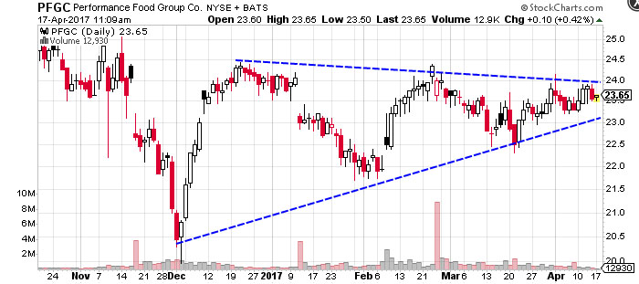
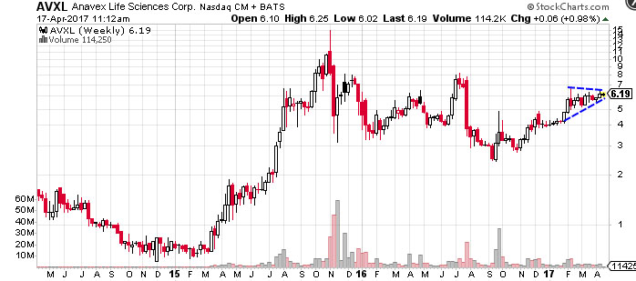
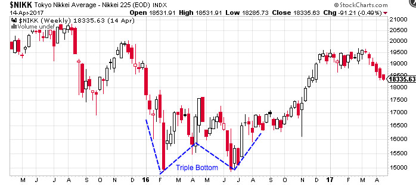

Head and Shoulders
The Head and Shoulders is a reversal chart pattern that indicates a likely reversal of the trend once it’s completed. A Head and Shoulder Top is characterized by three peaks with the middle peak being the highest peak (head) and the two others being lower and roughly equal (shoulders). The lows between these peaks are connected with a trend line (neckline) that represents the key support level to watch for a breakdown and trend reversal. A Head and Shoulder Bottom – or Inverse Head and Shoulders – is simply the inverse of the Head and Shoulders Top with the neckline being a resistance level to watch for a breakout higher.
Cup and Handle
The Cup and Handle is a bullish continuation pattern where an upward trend has paused, but will continue when the pattern is confirmed. The ‘cup’ portion of the pattern should be a “U” shape that resembles the rounding of a bowl rather than a “V” shape with equal highs on both sides of the cup. The ‘handle’ forms on the right side of the cup in the form of a short pullback that resembles a flag or pennant chart pattern. Once the handle is complete, the stock may breakout to new highs and resume its trend higher.
Double Tops and Bottoms
The Double Top or Double Bottom pattern are both easy to recognize and one of the most reliable chart patterns, making them a favorite for many technically-orientated traders. The pattern is formed after a sustained trend when a price tests the same support or resistance level twice without a breakthrough. The pattern signals the start of a trend reversal over the intermediate- or long-term.
Triangles
Triangles are among the most popular chart patterns used in technical analysis since they occur frequently compared to other patterns. The three most common types of triangles are symmetrical triangles, ascending triangles, and descending triangles. These chart patterns can last anywhere from a couple weeks to several months.
Symmetrical triangles occur when two trend lines converge toward each other and signal only that a breakout is likely to occur – not the direction. Ascending triangles are characterized by a flat upper trend line and a rising lower trend line and suggest a breakout higher is likely, while descending triangles have a flat lower trend line and a descending upper trend line that suggests a breakdown is likely to occur. The magnitude of the breakouts or breakdowns is typically the same as the height of the left vertical side of the triangle.
Flags & Pennants
Flags and Pennants are short-term continuation patterns that represent a consolidation following a sharp price movement before a continuation of the prevailing trend. Flag patterns are characterized by a small rectangular pattern that slopes against the prevailing trend, while pennants are small symmetrical triangles that look very similar.
Wedges
The Wedge pattern is a reversal or, less commonly, continuation pattern that’s similar to the symmetrical triangle except that it slants upward or downward. Rising wedges are bearish chart patterns that occur when trend is moving higher and the prices are converging and the prevailing trend is losing momentum. Falling wedges are bullish chart patterns that occur when the trend is moving lower and prices are converging, which signifies that the bearish trend is losing momentum and a reversal is likely.
The wedge pattern can be very difficult to identify and trade, which means it’s important to look for confirmations in other technical indicators, as we’ll learn about in the next section. For example, most traders watch for a diverging relative strength index or moving average convergence-divergence trend line that confirms a reversal is likely to occur.
Gaps
Gaps occur when there is empty space between two trading periods that’s caused by a significant increase or decrease in price. For example, a stock might close at $5.00 and open at $7.00 after positive earnings or other news. There are three main types of gaps: Breakaway gaps, runaway gaps, and exhaustion gaps. Breakaway gaps form at the start of a trend, runaway gaps form during the middle of a trend, and exhaustion gaps for near the end of the trend. (For more insight, read Playing the Gap).
Triple Tops & Bottoms
Triple Tops and Triple Bottoms are reversal patterns that aren’t as prevalent as Head and Shoulders or Double Tops or Double Bottoms. But, they act in a similar fashion and can be a powerful trading signal for a trend reversal. The patterns are formed when a price tests the same support or resistance level three times and is unable to break through.
Rounding Bottom
The Rounding Bottom – or Saucer Bottom – is a long-term reversal pattern that signals a shift from a downtrend to an uptrend and lasts anywhere from several months to several years.The chart patterns looks similar to a Cup and Handle pattern but without the handle. The long-term nature of the pattern and lack of a confirmation trigger – such as the handle – makes it a difficult pattern to trade.